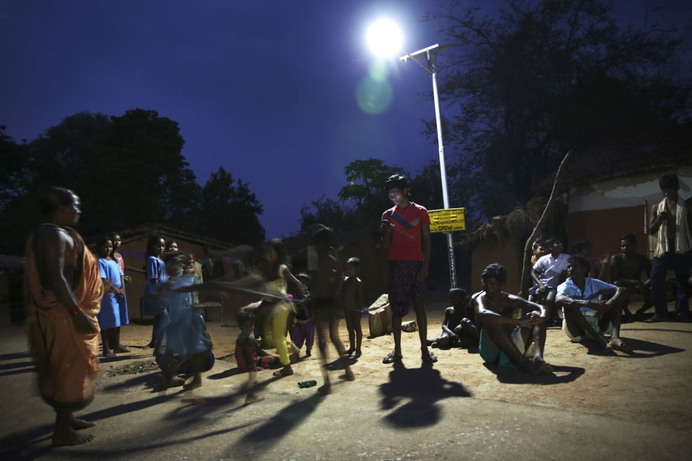

Energy is a resource that is a neccesity for all people. But for everyone to get energy, there will be a need for a more cheaper and affordable source that can be mass produced. More than 40% of the world's population still rely on a polluting source for everyday life. Utilising solar, wind, and thermal power, finding effective sources of energy and assure energy for all is crucial to reach SDG 7. This goal discusses this kind of issues and drives to find solutions to reach a target that the UN has made.

Importance of Goal
This is an important goal to reach since finding an affordable, efficient, clean, and mass-produceable source of energy will be a great breakthrough for our crisis of global warming and climate change caused by the release of various greenhouse gases into the atmosphere. This discovery will enable the entire world to rely on this new source of energy and use less fossil fuels resulting in a cleaner world for all.
UN Targets
- By 2030, ensure universal access to affordable, reliable and modern energy services
- By 2030, increase substantially the share of renewable energy in the global energy mix
- By 2030, increase substantially the share of renewable energy in the global energy mix
- By 2030, double the global rate of improvement in energy efficiency
- By 2030, enhance international cooperation to facilitate access to clean energy research and technology, including renewable energy, energy efficiency and advanced and cleaner fossil-fuel technology, and promote investment in energy infrastructure and clean energy technology
- By 2030, expand infrastructure and upgrade technology for supplying modern and sustainable energy services for all in developing countries, in particular least developed countries, small island developing States, and land-locked developing countries, in accordance with their respective programmes of support